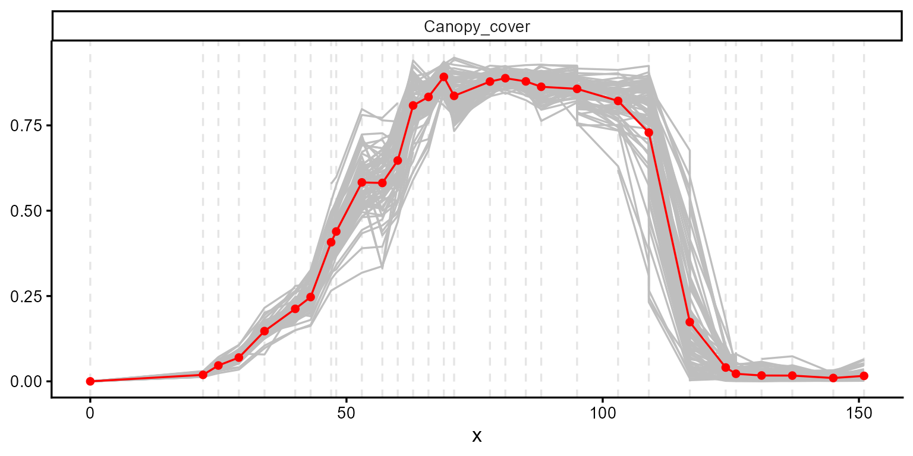
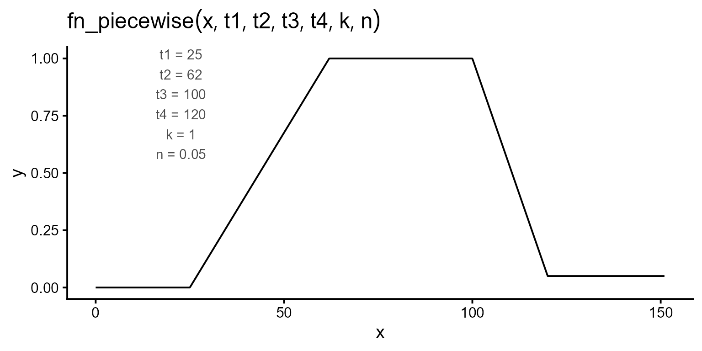
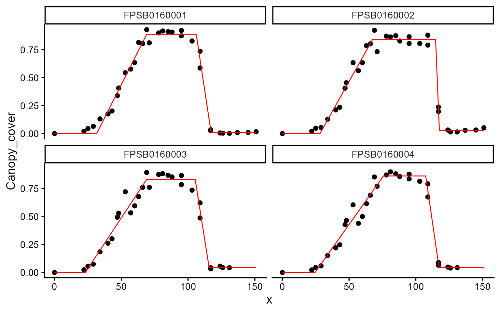
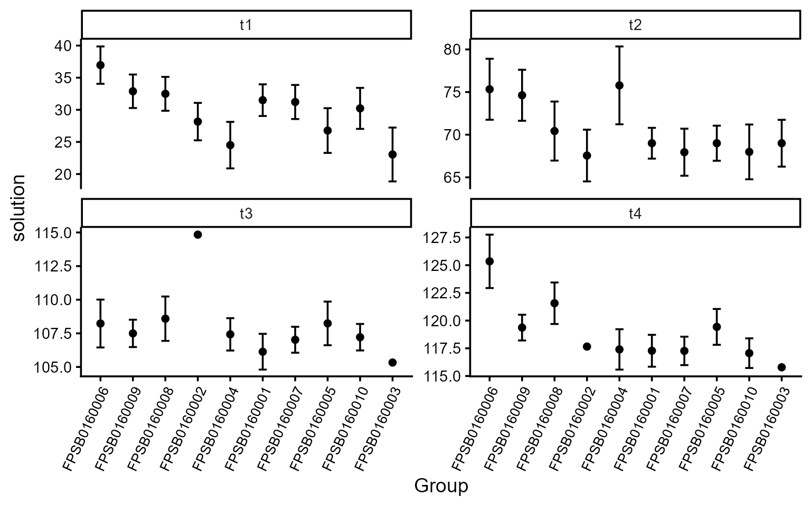
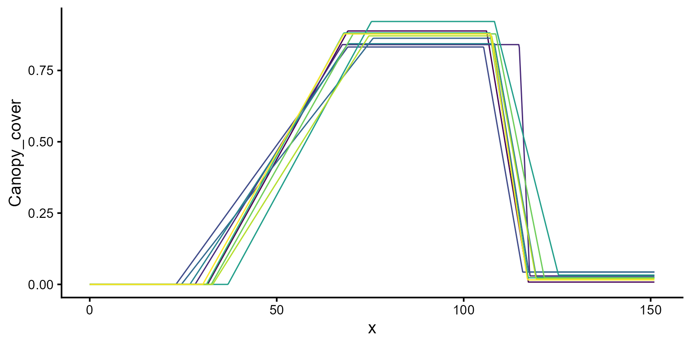
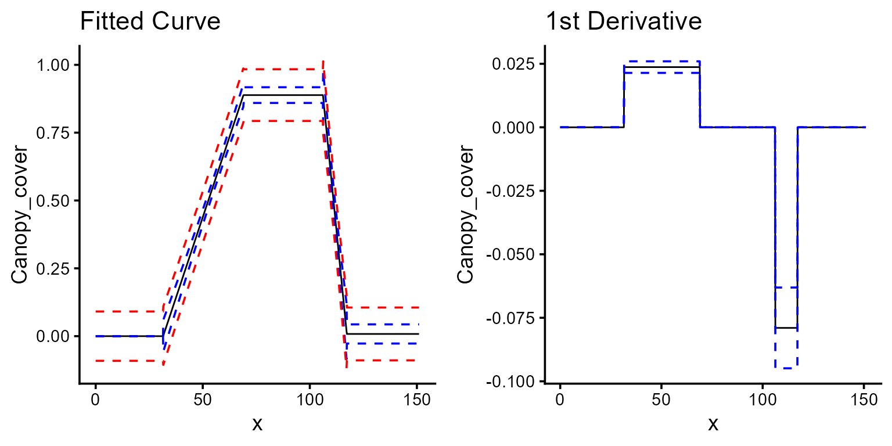

Estimating soybean canopy development phases
We use canopy-cover data from the 2022 soybean season collected with
ETH Zurich’s Field Phenotyping Platform (Keller et al., 2026). The
dataset contains 78 plots measured on 30 dates, with canopy cover
expressed as a proportion from 0 to 1. The seasonal trajectories include
canopy expansion, a period of maximum cover, and canopy decline. We use
a piecewise function to estimate four transition times: t1,
the onset of canopy expansion; t2, the start of the
maximum-cover plateau; t3, the onset of canopy decline; and
t4, the end of canopy decline. The parameters
k and n represent maximum and terminal canopy
cover, respectively.
data(dt_soybean_22)
head(dt_soybean_22)
#> # A tibble: 6 × 7
#> location Year sowing_date harvest_date plot.UID time_since_sowing
#> <chr> <dbl> <date> <date> <chr> <dbl>
#> 1 Eschikon 2022 2022-04-21 2022-09-23 FPSB0160001 0
#> 2 Eschikon 2022 2022-04-21 2022-09-23 FPSB0160001 22
#> 3 Eschikon 2022 2022-04-21 2022-09-23 FPSB0160001 25
#> 4 Eschikon 2022 2022-04-21 2022-09-23 FPSB0160001 29
#> 5 Eschikon 2022 2022-04-21 2022-09-23 FPSB0160001 34
#> 6 Eschikon 2022 2022-04-21 2022-09-23 FPSB0160001 40
#> # ℹ 1 more variable: Canopy_cover <dbl>1. Exploring data
We start with explorer(), which summarizes the series
and lets us look at the temporal evolution of every plot before model
fitting.
ex <- explorer(dt_soybean_22, x = time_since_sowing, y = Canopy_cover, id = plot.UID)
names(ex)
#> [1] "summ_vars" "summ_metadata" "locals_min_max" "dt_long"
#> [5] "metadata" "x_var"
plot(ex, type = "evolution", add_avg = TRUE)
#> Warning: Removed 32 rows containing missing values or values outside the scale range
#> (`geom_line()`).
The curve starts flat, rises steeply, plateaus near 0.87, then declines through senescence but stops above zero. The curve does not return completely to zero, indicating that some green canopy cover remains at the end of the observed period. This remaining cover is represented by the parametern.
2. Regression function
The function takes time (t) first and the parameters
after:
\[\begin{equation} f(t; t_1, t_2, t_3, t_4, k, n) = \begin{cases} 0 & \text{if } t < t_1 \\ \dfrac{k}{t_2 - t_1} \cdot (t - t_1) & \text{if } t_1 \leq t \leq t_2 \\ k & \text{if } t_2 < t \leq t_3 \\ n + (k - n) \cdot \dfrac{t_4 - t}{t_4 - t_3} & \text{if } t_3 < t \leq t_4 \\ n & \text{if } t > t_4 \end{cases} \end{equation}\]
fn_piecewise <- function(t, t1, t2, t3, t4, k, n) {
ifelse(
test = t < t1, yes = 0,
no = ifelse(
test = t <= t2, yes = k / (t2 - t1) * (t - t1),
no = ifelse(
test = t <= t3, yes = k,
no = ifelse(
test = t <= t4, yes = n + (k - n) * (t4 - t) / (t4 - t3),
no = n
)
)
)
)
}Before fitting anything, plot_fn() lets us draw the
function at our proposed initial values.
initial_vals <- c(t1 = 25, t2 = 62, t3 = 100, t4 = 120, k = 1, n = 0.05)
plot_fn(
fn = "fn_piecewise",
params = initial_vals,
interval = c(0, 151),
color = "black",
base_size = 15
)
That is a good starting guess: it reproduces the four breakpoints seen in the evolution plot.3. Fitting models
We fit 10 plots first. Scaling to the full trial will be shown at the end.
plots_ids <- unique(dt_soybean_22$plot.UID)[1:10]
mod_1 <- dt_soybean_22 |>
modeler(
x = time_since_sowing,
y = Canopy_cover,
grp = plot.UID,
fn = "fn_piecewise",
parameters = initial_vals,
subset = plots_ids,
method = c("BFGS", "subplex")
)
print(mod_1)
#>
#> Call:
#> Canopy_cover ~ fn_piecewise(time_since_sowing, t1, t2, t3, t4, k, n)
#>
#> Residuals (`Standardized`):
#> Min. 1st Qu. Median Mean 3rd Qu. Max.
#> -2.74326 -0.41092 0.03308 0.06519 0.63805 2.74532
#>
#> Optimization Results `head()`:
#> uid t1 t2 t3 t4 k n sse
#> FPSB0160001 31.5 69.0 106 117 0.888 0.00815 0.0529
#> FPSB0160002 28.2 67.6 115 118 0.841 0.02974 0.0615
#> FPSB0160003 23.0 69.0 105 116 0.832 0.04308 0.1012
#> FPSB0160004 24.5 75.8 107 117 0.863 0.04366 0.0763
#>
#> Metrics:
#> Groups Timing Convergence Iterations
#> 10 2.6945 secs 100% 2149.7 (id)Passing more than one optimizer to method makes
modeler() try each and keep the best solution per plot. Use
list_methods() to see the full set of available
optimizers.
plot(mod_1, id = plots_ids[1:4])
| uid | t1 | t2 | t3 | t4 | k | n | sse | fn_name |
|---|---|---|---|---|---|---|---|---|
| FPSB0160001 | 31.51 | 69.00 | 106.13 | 117.28 | 0.89 | 0.01 | 0.05 | fn_piecewise |
| FPSB0160002 | 28.17 | 67.55 | 114.84 | 117.66 | 0.84 | 0.03 | 0.06 | fn_piecewise |
| FPSB0160003 | 23.05 | 69.00 | 105.33 | 115.79 | 0.83 | 0.04 | 0.10 | fn_piecewise |
| FPSB0160004 | 24.50 | 75.78 | 107.42 | 117.40 | 0.86 | 0.04 | 0.08 | fn_piecewise |
| FPSB0160005 | 26.77 | 69.00 | 108.24 | 119.43 | 0.84 | 0.03 | 0.08 | fn_piecewise |
| FPSB0160006 | 36.96 | 75.33 | 108.23 | 125.35 | 0.92 | 0.03 | 0.07 | fn_piecewise |
| FPSB0160007 | 31.22 | 67.95 | 107.02 | 117.27 | 0.88 | 0.02 | 0.05 | fn_piecewise |
| FPSB0160008 | 32.49 | 70.43 | 108.59 | 121.57 | 0.88 | 0.02 | 0.05 | fn_piecewise |
| FPSB0160009 | 32.89 | 74.62 | 107.50 | 119.37 | 0.87 | 0.02 | 0.05 | fn_piecewise |
| FPSB0160010 | 30.23 | 67.98 | 107.21 | 117.06 | 0.88 | 0.02 | 0.06 | fn_piecewise |
3.1. Extracting model coefficients and uncertainty measures
coef(), confint(), and vcov()
return the parameter estimates, confidence intervals, and
variance-covariance matrices, respectively.
coef(mod_1, id = plots_ids[1])
#> # A tibble: 6 × 7
#> uid fn_name coefficient solution std.error `t value` `Pr(>|t|)`
#> <chr> <chr> <chr> <dbl> <dbl> <dbl> <dbl>
#> 1 FPSB0160001 fn_piecewise t1 31.5 1.20 26.2 9.59e-21
#> 2 FPSB0160001 fn_piecewise t2 69 0.879 78.5 2.12e-33
#> 3 FPSB0160001 fn_piecewise t3 106. 0.648 164. 5.25e-42
#> 4 FPSB0160001 fn_piecewise t4 117. 0.702 167. 2.98e-42
#> 5 FPSB0160001 fn_piecewise k 0.888 0.0141 63.0 7.69e-31
#> 6 FPSB0160001 fn_piecewise n 0.00815 0.0172 0.474 6.39e- 1
confint(mod_1, id = plots_ids[1])
#> # A tibble: 6 × 7
#> uid fn_name coefficient solution std.error ci_lower ci_upper
#> <chr> <chr> <chr> <dbl> <dbl> <dbl> <dbl>
#> 1 FPSB0160001 fn_piecewise t1 31.5 1.20 29.0 34.0
#> 2 FPSB0160001 fn_piecewise t2 69 0.879 67.2 70.8
#> 3 FPSB0160001 fn_piecewise t3 106. 0.648 105. 107.
#> 4 FPSB0160001 fn_piecewise t4 117. 0.702 116. 119.
#> 5 FPSB0160001 fn_piecewise k 0.888 0.0141 0.860 0.917
#> 6 FPSB0160001 fn_piecewise n 0.00815 0.0172 -0.0271 0.0434
vcov(mod_1, id = plots_ids[1])$FPSB0160001 |> round(digits = 3)
#> t1 t2 t3 t4 k n
#> t1 1.443 -0.354 -0.029 0.001 0.002 0.000
#> t2 -0.354 0.773 -0.059 0.001 0.005 0.000
#> t3 -0.029 -0.059 0.420 -0.204 -0.003 0.001
#> t4 0.001 0.001 -0.204 0.492 0.000 -0.005
#> k 0.002 0.005 -0.003 0.000 0.000 0.000
#> n 0.000 0.000 0.001 -0.005 0.000 0.000
#> attr(,"fn_name")
#> [1] "fn_piecewise"| uid | fn_name | var | SSE | MAE | MSE | RMSE | R2 | n |
|---|---|---|---|---|---|---|---|---|
| FPSB0160001 | fn_piecewise | Canopy_cover | 0.05 | 0.03 | 0 | 0.04 | 0.99 | 33 |
| FPSB0160002 | fn_piecewise | Canopy_cover | 0.06 | 0.03 | 0 | 0.04 | 0.99 | 33 |
| FPSB0160003 | fn_piecewise | Canopy_cover | 0.10 | 0.05 | 0 | 0.06 | 0.97 | 30 |
| FPSB0160004 | fn_piecewise | Canopy_cover | 0.08 | 0.04 | 0 | 0.05 | 0.98 | 30 |
| FPSB0160005 | fn_piecewise | Canopy_cover | 0.08 | 0.04 | 0 | 0.05 | 0.98 | 31 |
| FPSB0160006 | fn_piecewise | Canopy_cover | 0.07 | 0.03 | 0 | 0.05 | 0.98 | 32 |
| FPSB0160007 | fn_piecewise | Canopy_cover | 0.05 | 0.03 | 0 | 0.04 | 0.99 | 33 |
| FPSB0160008 | fn_piecewise | Canopy_cover | 0.05 | 0.03 | 0 | 0.04 | 0.99 | 33 |
| FPSB0160009 | fn_piecewise | Canopy_cover | 0.05 | 0.03 | 0 | 0.04 | 0.99 | 33 |
| FPSB0160010 | fn_piecewise | Canopy_cover | 0.06 | 0.03 | 0 | 0.04 | 0.99 | 33 |
4. Plotting options
type = 2 shows the coefficients with their confidence
intervals. Restricting parm to the four time parameters
keeps them on a common scale:
mod_1 |>
plot(type = 2, id = plots_ids, parm = c("t1", "t2", "t3", "t4"), label_size = 10) +
theme(axis.text.x = element_text(angle = 65, hjust = 1))
type = 3 overlays every fitted curve, which is a good way
to spot a plot that behaved differently from the rest:
plot(mod_1, type = 3, id = plots_ids)
type = 4 adds confidence (blue) and prediction (red)
intervals, and type = 5 plots the first derivative. For
this function, the canopy expansion and senescence rates appear as two
flat steps:
a <- plot(mod_1, type = 4, id = plots_ids[1], color = "black")
b <- plot(mod_1, type = 5, id = plots_ids[1], color = "black")
ggarrange(a, b)
5. Deriving canopy development traits
The fitted parameters are already stage estimates, but some other
interesting quantities we usually compare are differences
between them. predict.modeler() accepts a formula involving
the fitted parameters and propagates their uncertainty:
durations <- rbind(
predict(mod_1, formula = ~ t2 - t1, id = plots_ids),
predict(mod_1, formula = ~ t3 - t2, id = plots_ids),
predict(mod_1, formula = ~ t4 - t3, id = plots_ids)
)
durations |>
mutate_if(is.numeric, round, 2) |>
filter(uid %in% "FPSB0160001") |>
select(-fn_name) |>
knitr::kable()| uid | formula | predicted.value | std.error |
|---|---|---|---|
| FPSB0160001 | t2 - t1 | 37.49 | 1.71 |
| FPSB0160001 | t3 - t2 | 37.13 | 1.15 |
| FPSB0160001 | t4 - t3 | 11.15 | 1.15 |
These three read as the duration of canopy expansion, the length of the full-canopy plateau, and the duration of senescence.
We can also get rates rather than durations — the slope of the
expansion phase is k / (t2 - t1):
predict(mod_1, formula = ~ k / (t2 - t1), id = plots_ids[1:2]) |>
mutate_if(is.numeric, round, 3) |>
knitr::kable()| uid | fn_name | formula | predicted.value | std.error |
|---|---|---|---|---|
| FPSB0160001 | fn_piecewise | k/(t2 - t1) | 0.024 | 0.001 |
| FPSB0160002 | fn_piecewise | k/(t2 - t1) | 0.021 | 0.001 |
Integrating the fitted curve provides the area under the canopy-cover curve, expressed in canopy-cover days:
predict(mod_1, x = c(0, 151), type = "auc", id = plots_ids[1:3]) |>
mutate_if(is.numeric, round, 2) |>
knitr::kable()| uid | fn_name | x_min | x_max | predicted.value | std.error |
|---|---|---|---|---|---|
| FPSB0160001 | fn_piecewise | 0 | 151 | 54.92 | 0.99 |
| FPSB0160002 | fn_piecewise | 0 | 151 | 58.52 | 1.09 |
| FPSB0160003 | fn_piecewise | 0 | 151 | 55.45 | 1.46 |
6. Modeling all plots using parallel processing
Finally, the same call scales to all 78 plots by adding the
options argument.
7. Conclusion
Using the publicly available soybean ground cover dataset from Keller et al. (2026), we demonstrated how flexFitR can transform time-series observations into interpretable growth parameters. We thank the authors for making the dataset publicly available.
References
Keller, B., Kirchgessner, N., Oppliger, C., Kronenberg, L., Roth, L., Zumsteg, O., Corrado, S., Liebisch, F., Aasen, H., Storni, N., Tschurr, F., Zellweger, H., Betrix, C. A., Barendregt, C., Hund, A., & Walter, A. (2026). FIP 1.0 soybean data: Insights on soybean growth from eight years of high-throughput image field phenotyping. Scientific Data, 13(1), 476. https://doi.org/10.1038/s41597-026-06663-z